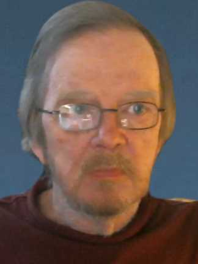

The Fourth Workshop on Reproducibility and Replication of Research Results (RRRR 2025) is part of ETAPS 2025 in Hamilton, Canada. It will take place on May 3, 2025, as part of the ETAPS workshops. RRRR provides a forum to present and discuss novel approaches to foster reproducibility of research results, and replication studies of existing work, in the broad area of formal methods and software engineering research. Its goal is to spread the word on best practices, and reward the work invested in replicating results.
Where reproducible research can be independently confirmed by third parties using artifacts provided by the original authors, replicating a result means to independently obtain it using new measurements, data, or implementations. RRRR will improve the knowledge transfer between the many separate initiatives – like artifact evaluations and tool competitions – that today support reproducibility, and provide a venue to formally publish replication studies, recognising their immense benefit to the scientific community and the hard work involved.
The goal of the RRRR workshop is to provide a venue for lively and constructive in-person discussions and knowledge exchange. Submissions should be related to research in the broad area of formal methods and software engineering. Submissions are welcome in, but not limited to, the following topics on reproducibility and replication:
We in particular encourage authors of papers accepted at the main ETAPS conferences to present the reproducibility- and replication-related aspects of their work at RRRR. We also plan a special session on the topic of artifact evaluation, with reports by the chairs of the ETAPS 2025 artifact evaluation committees.
 RRRR 2025 features a keynote by Christopher Drummond, National Research Council Canada, author of Reproducible research: a minority opinion and Is the drive for reproducible science having a detrimental effect on what is published? The keynote is part of a joint session with TADM 2025. It is followed by a presentation by David Parnas, TADM invited speaker, and a panel/debate between the two speakers and with the audience. We recommend RRRR attendees to check out Reproducible research: a minority opinion before the workshop to prepare for the discussion.
RRRR 2025 takes place on Saturday, May 3, 2025, as part of the ETAPS workshops at McMaster University in Hamilton, Canada. The programme for the day is as follows:
| Morning | Room: MDCL 1008 |
| 08:55-09:00 | Welcome and opening |
| 09:00-10:00 | Session 1 |
|---|---|
|
Security Verification Tools for Ethereum Smart Contracts: A Reusability Bonfire Story
[PDF] (Tommaso Oss and Carlos E. Budde) |
|
|
Runtime Verification Tools
[PDF] (Sean Kauffman and Klaus Havelund) |
|
| 10:00-10:30 | Coffee Break |
| 10:30-12:30 | Session 2 |
|
Towards a Database of Timed Automata
[PDF] (Nicolaj Østerby Jensen and Marius Mikučionis) |
|
|
Replication of (Un)sound Multi-Objective Probabilistic Model Checking Algorithms
[PDF] (Mark van Wijk) |
|
|
Bisimulation Minimisation Still Mostly Speeds Up Probabilistic Model Checking
[PDF] (Adnan Ahmed, Hiva Karami, Anto Nanah Ji and Franck van Breugel) |
|
|
MoXI: An Intermediate Language to Spur Reproducible and Comparable Model Checking Research
(Kristin Yvonne Rozier) |
|
| 12:30-14:00 | Lunch |
| Afternoon | Room: MDCL 1110 (with TADM) |
| 14:00-15:00 | Keynotes and Discussion |
|
Questioning the Centrality of Reproducibility in Scientific Evaluation (Christopher Drummond) |
|
|
TBA (David Parnas) |
|
| Debate and discussion with the audience | |
| 16:00-16:30 | Coffee Break |
| 16:30-16:45 | Closing (in room MDCL 1008) |
Submissions are handled via EasyChair. All accepted submissions will be informally published via the RRRR website. RRRR accepts presentation abstracts (1-2 pages in LNCS style including references) as well as short papers (around 6 pages in LNCS style plus references). The page limits are flexible. Authors of all accepted submissions will present their work at the workshop (in person).
We plan to invite authors of accepted papers/abstracts to submit an extended/full version of their work to a special issue in the International Journal on Software Tools for Technology Transfer (STTT) given sufficient interest. All journal submissions will undergo a full reviewing process and are expected to be accompanied by an artifact where applicable.
All dates are in 2025 and all deadlines are "anywhere on Earth" (UTC-12). Acceptance notifications will be sent before the current ETAPS 2025 early registration deadline.
Arnd Hartmanns
(University of Twente, The Netherlands),
Sean Kauffman
(Queen's University, Canada)
{kind=link}